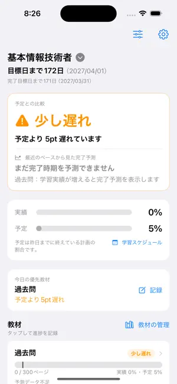
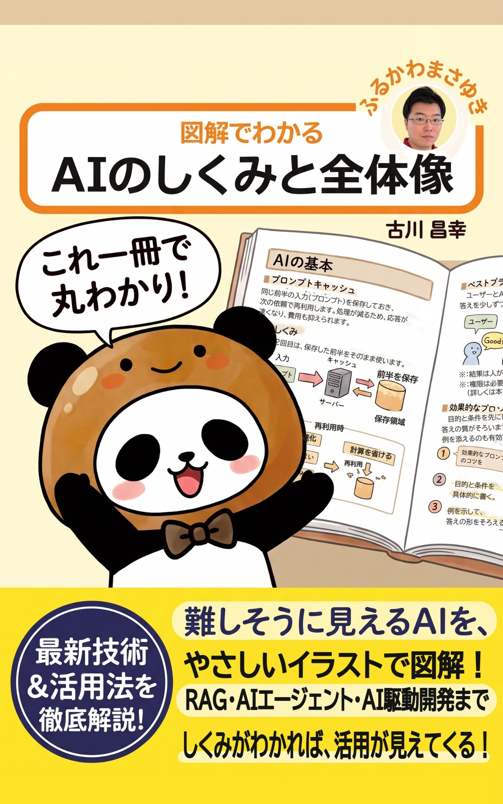

開発PM
約10名の受託開発を、新規リリースから追加開発まで担当
レンタル管理システムの新規開発はPMとして担当。リリース後も保守運用と2回の追加開発を進め、Phase 1.1ではPMに加えて実装も担当しました。
MASAYUKI FURUKAWA
開発プロジェクトマネージャー ／ AI研究開発
受託開発と自社プロダクトで、要求分析・見積からリリース・運用まで担当してきました。AI研究開発では、MLOpsを活用した営業支援エージェントや、生成AIの使い方を評価・改善する仕組みを開発。自治体向けAIの本番導入と、社内業務へのAI活用の定着も進めています。
開発PM 約2年8か月（2026年11月時点） ／ 最大約10名のチーム
代表実績を見る
開発PM
レンタル管理システムの新規開発はPMとして担当。リリース後も保守運用と2回の追加開発を進め、Phase 1.1ではPMに加えて実装も担当しました。
生成AIの評価・改善
プロンプトやAIに渡す文脈の設計を採点し、改善案を生成。実行手順や反復回数、ワークフローを設定し、開発案件に取り込めるようにしました。
AI研究開発
営業戦略の仮説づくりを支援するAIエージェントを設計。営業実績を複数の手法で分析し、結果を保存・再利用できる基盤を構築しました。
AI本番導入
市職員へのヒアリング、予算・要件調整、実証、構築を担当。2026年4月に本格運用を開始しました。
鹿嶋市の公式発表受託開発・約10名・ウォーターフォール
宝飾・展示会向けディスプレイのレンタル管理システムで、要求分析、見積、進捗・課題管理、成果物レビュー、リリース、保守運用まで担当。2回の追加開発もPMとして進め、Phase 1.1では自ら実装にも参加しました。
自社プロダクト・開発PM
企業とフリーランスエンジニアをつなぐサービスで、要求分析からリリースまで推進。利用者・社内の要望と開発上の制約を踏まえ、初回リリースに入れる機能と見送る機能を判断しました。
受託開発・開発PM
開発PMとして、当初の想定と実際の業務要件の差を整理し、技術検証を踏まえて仕様と実装方針を調整。開発を推進しました。
社内システム・開発PM
勤怠の提出・管理を効率化する要望を受け、バックオフィス業務の自動化と連携できる社内ERPとして構築を進めました。
営業データ分析・AIエージェント
営業戦略や次の施策の仮説づくりを支援するエージェントを設計。営業実績の取り込み、複数手法による分析、分析結果の保存・再利用を支える基盤を構築しました。
生成AIの評価・開発環境への導入
AI開発企業が公開する指針をもとに、プロンプト設計やコンテキストの与え方を採点し、改善したプロンプトを生成する仕組みを構築。ハーネスの構成、ループ回数、ワークフローを画面で設定し、開発案件に取り込めるようにしました。
AIエージェント開発
AutoGenを使用し、複数のAIエージェントが連携してユーザーとチャットで対話するシステムを開発しました。
モデルの技術検証
LM Studioなどを使ってQwen系の複数サイズのモデルをローカルで動かし、規模ごとにどのようなタスクをどこまでこなせるかを比較検証しました。
AIツール開発
プロンプトの作成支援と管理を一つのシステムにまとめ、話した内容をもとにプロンプトを作成できるよう、音声入力を組み込みました。
個人制作・IoT技術検証
カメラが検知した画像と参照画像を生成AIで照合し、写っている人物と、その人が入室したか退室したかを判定する仕組みを試作しました。
技術検証・PoC
複数の画像を組み合わせたときの見え方を確認するシミュレーションを試作しました。
技術検証・PoC
壁紙を張り替えたときに室内がどう見えるかを、画面上で確認するシミュレーションを試作しました。
自治体DX・AI導入
市職員へのヒアリングと予算・要件の調整から、実証実験、設計・構築まで一貫して担当。市民向けサービスとして2026年4月に本格運用を開始し、運用後も問い合わせ対応や利用ログをもとに改善を進めています。
鹿嶋市の本格運用のお知らせ
業務改善
バックオフィス業務を棚卸しして課題を整理し、自動化できる業務を見極めました。課題ごとに対応方法を検討し、順次自動化を進めました。
社内AI導入
広報チームが反応の多い投稿を調べ、AIで投稿案を作成する手順を整え、日常のX運用に定着させました。
社内AI導入
Claude Designを使ったHTMLメールの制作手順を広報チームに共有し、担当者が日々のメール制作でAIを活用できるよう導入を支援しました。
サービス企画・営業支援
AI事業の定例で、既存システムへの機能追加を体験できる入門プランや、商工会と連携した顧客へのアプローチを提案。経営者向けセミナーを月次で企画・実施し、外部イベントで見込み客や協業先候補との接点を作りました。非エンジニア向けのAI開発講座では、カリキュラムと教材の作成、登壇を担当しました。
PROJECTS
iOSアプリ
資格学習の計画と進捗を管理するアプリ。曜日ごとの学習時間を設定でき、進み具合は前日までの計画と実績を比べて判定するように設計しました。企画から開発、App Store公開まで個人で担当しました。
App Storeで見る
iOSアプリ · 開発中
旅行の持ち物をリストにまとめるアプリ。荷造りから帰る前の忘れ物チェックまでを、ひとつのリストで管理できるよう開発しています。
書籍 · 出版準備中
生成AIを実際の開発でどう使うかを、図解と事例で紹介。AIを使ったiOSアプリ開発や、LLMOpsも扱います。
